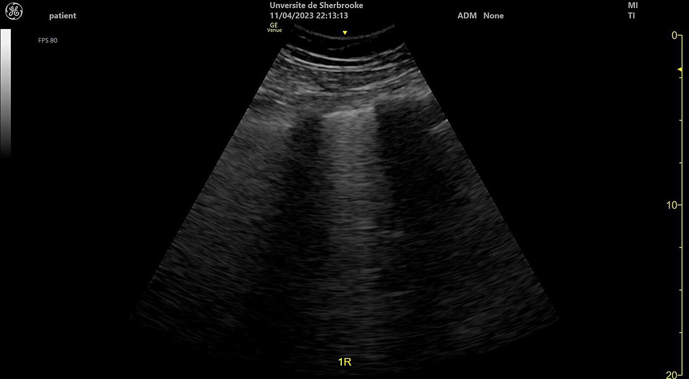

Ficha del catálogo
Ecografía pulmonar a pie de cama: Líneas B y síndrome intersticial
- Sistema
- Respiratorio
- Modalidad
- US
- Región
- Tórax
- Dificultad
- Intermedio
Exploración ecográfica del tórax realizada junto al paciente que aprovecha los artefactos generados en la interfase entre pleura y aire para inferir el estado del pulmón. Es especialmente útil en urgencias y en cuidados intensivos para separar de forma rápida las causas de disnea aguda y para evitar traslados de pacientes inestables.
Técnica
Ecografía con sonda convexa o lineal aplicada de forma longitudinal entre las costillas, explorando de manera ordenada varias regiones de cada hemitórax.
Qué observar
- Deslizamiento pleural, que indica contacto entre las dos hojas
- Líneas A horizontales y repetidas propias del pulmón aireado
- Líneas B verticales que parten de la pleura y borran las líneas A
- Aumento del número de líneas B por campo como signo de síndrome intersticial
- Distribución bilateral y simétrica, que orienta a edema pulmonar
- Consolidaciones subpleurales y derrame anecoico en las zonas declives
Hallazgos
Múltiples líneas B verticales bilaterales con deslizamiento pleural conservado, hallazgo compatible con síndrome intersticial.
Perlas
El patrón de líneas B bilateral y homogéneo sugiere sobrecarga hídrica, mientras que un patrón parcheado con zonas normales, pleura irregular y consolidaciones subpleurales apunta a causa inflamatoria o infecciosa. La ausencia de deslizamiento pleural obliga a descartar neumotórax.
Diagnóstico diferencial
- Neumotórax
- Ausencia de deslizamiento y de líneas B, con punto pulmonar cuando es parcial.
- Neumonía
- Consolidación con broncograma y distribución focal.
- Fibrosis pulmonar
- Líneas B con pleura irregular y engrosada de predominio basal.
Simuladores
- Líneas B aisladas normales en las bases
- Artefactos por mala aplicación del gel o por presión insuficiente
- Sombra costal interpretada como ausencia de deslizamiento
Por modalidad
- US
- Rápida, sin radiación y repetible a la cabecera del paciente
- RX
- Menos sensible para el síndrome intersticial incipiente
- TC
- Referencia diagnóstica cuando la ecografía no resuelve el cuadro
Protocolo
Exploración sistemática por regiones anteriores, laterales y posteriores de ambos hemitórax, sin filtros de reducción de artefactos y con el foco situado en la línea pleural.
Clasificación
Errores frecuentes
- Activar filtros de imagen que eliminan los artefactos que se buscan
- Explorar solo la cara anterior y perder los hallazgos declives
- Interpretar líneas B aisladas en bases como enfermedad

ecografia pulmonar lineas b sindrome intersticial deslizamiento pleural urgencias